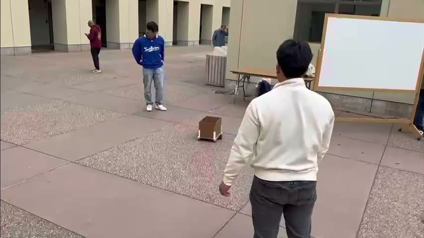
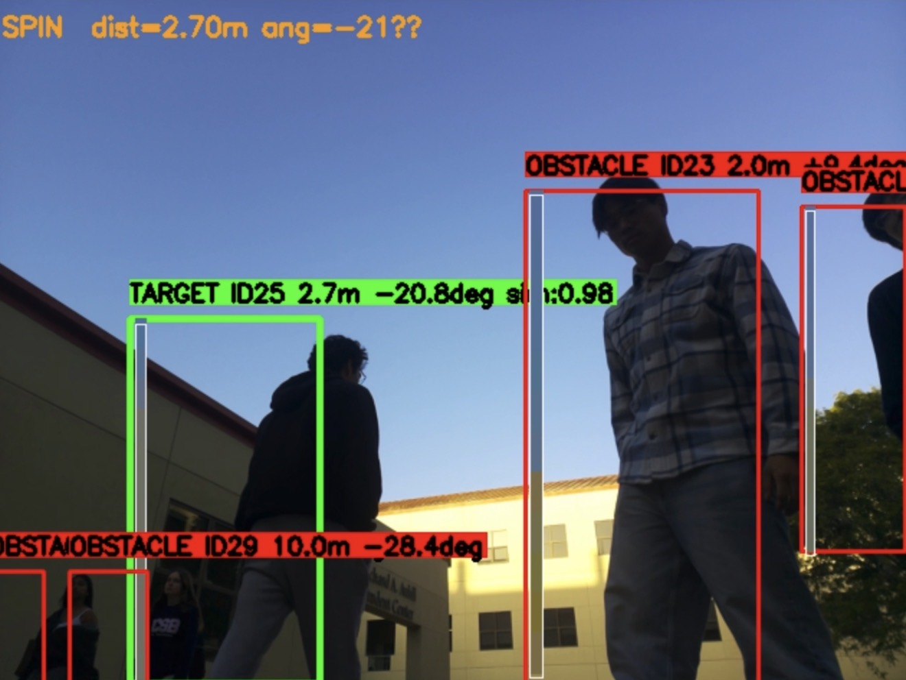
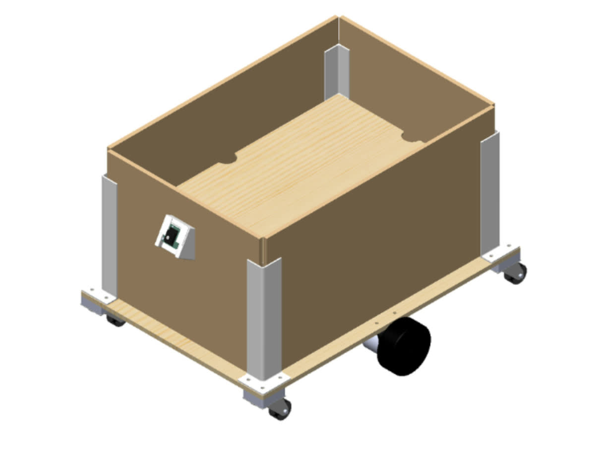
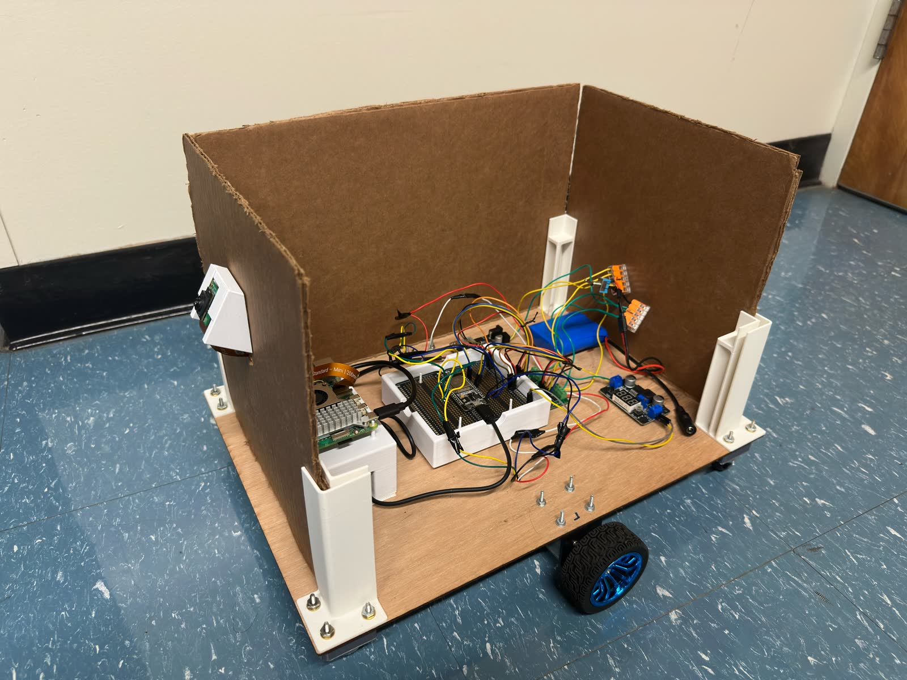

Watch it work.
No remote, no rails, no tricks — the cart picks its own speed and steering. Same robot, two views.
See. Think. Move.
Three jobs, three chips, one loop — thirty times every second. That's more often than a movie changes frames.
A camera with a brain of its own
The camera chip runs a neural network that spots every person in view. The cart locks onto you and memorizes the colors you're wearing.
Two smooth decisions per frame
A Raspberry Pi turns "where are you" into "how fast" and "which way" — gently, like easing a car up to a red light.
Wheels that report back
An ESP32 chip powers the wheels, and sensors report how far each really turned. The cart always knows what actually happened.
30 fps
over USB

What the cart actually sees
A real frame from its camera, mid-walk on a crowded plaza:
- ■ TARGET — the locked shopper: distance, direction, and color match (98%).
- ■ OBSTACLE — everyone else, tracked so the cart can pause for them.
- ■ STATUS — what the cart is doing right now, updated every frame.
How it knows it's you.
The camera finds every person. Telling its shopper apart from a stranger is the clever part — and it's done with color.
It studies your outfit
During a 15-second warm-up it builds a color fingerprint of your outfit. That fingerprint is its memory of you.
Everyone gets scored
Every person in view is compared to the fingerprint, thirty times a second. The best match keeps the green box.
Lost is not forgotten
If someone blocks the view, the lock snaps back the moment you reappear. The match uses regression-trained weights, so shadows and changing light don't shake it.
Privacy, by design. It never learns your face — only today's outfit colors, forgotten at power-off. (Yes, identical twins in matching hoodies could fool it.)
Smooth on purpose.
Robots usually jerk — stop, go, overshoot, correct. This one doesn't, because of three small ideas working together.
1 · Speed matches the gap
Far behind → hurry. Getting close → ease off. Inside the bubble → wait. One smooth ramp, no on/off switching.
Steering works the same way: big angle, firm turn; small angle, gentle nudge.
2 · It measures its own momentum
A heavy cart glides past where it cuts power. So it measures every glide and learns its own momentum — next time it brakes early and lands right on the line.
Turns learn the same way. There is no calibration day — every stop is the calibration.
3. A little kick to get rolling.
A gentle push from standstill won't beat floor grip. So the cart gives itself a quick shove, released the instant the wheels confirm motion.
Small cart. Big manners.
Everything below runs together, live, with no human input after launch.
Keeps a polite distance
Hangs back two meters. Walk and it follows; stop and it eases to a halt. No tailgating.
Knows who it's following
Your colors are its memory of you. Everyone else is just an obstacle — never followed.
Waits for people in the way
Someone steps between you? It pauses, keeps aiming at you, and rolls on when the path clears.
Never gives up the search
Lost you around a corner? It turns toward where it last saw you and keeps scanning until you're back.
Finds its own way back
Spin it around while parked and it takes the hint — it drives itself back to where it started.
Teaches itself to drive
Every stop and turn teaches it its own physics. No calibration sessions — it tunes itself as it goes.
Modular, precise, serviceable.
The cart is built as a modular system, so electronics, drivetrain, structure, and sensors can be scaled, swapped, and maintained without rebuilding the whole robot.


Built to be maintained. The modular layout keeps subsystems accessible, repeatable to manufacture, and ready to scale as the cart evolves.
Curious how deep it goes?
Vision, controls, and firmware in one readable codebase. The README has the full story.